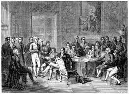
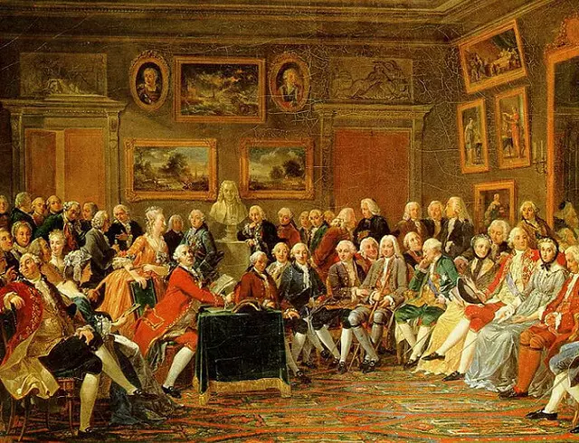
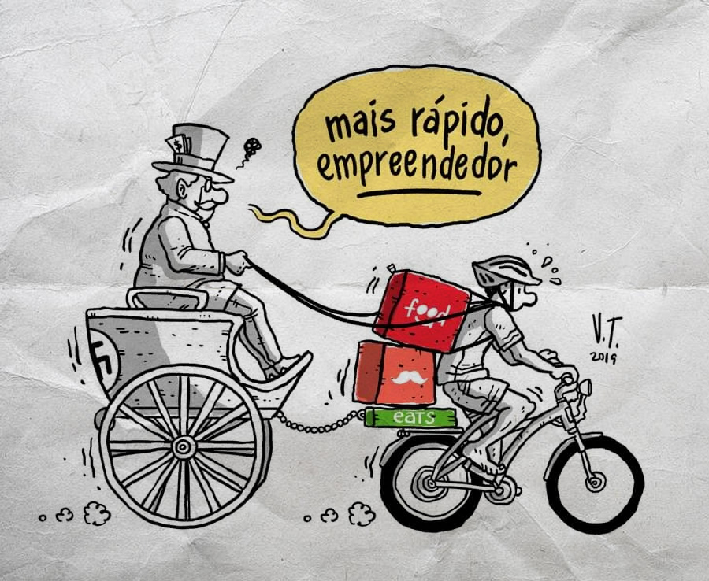

Jornal
Home
Notícias
Socias
Econômicas
Culturais
Editoral
Notícias Socias

Líderes absolutistas se reúnem após queda de Napoleão, o chamado congresso de Viena pode revolucionar a história
Luís XVIII está de volta ao poder! o rei retorna ao cargo com poderes moderados
Acabou! Dinastia Bourbon é finalizada no governo francês
Notícias Econômicas
Em Cartaz: "O manifesto comunista" de Karl Marx e Friedrich Engels
Pensadores iluministas propõe uma nova ideia liberalismo será o caminho da sociedade?
Tentativas de consolidar um estado nacionalista cresce após o congresso de Viena
Notícias Culturais

Pensamentos iluministas vêm influenciando novas revoluções

Índice de exploração ao trabalhador cresce exponencialmente após as revoluções
Tentativa de impor um governo socialista no poder falha na França a chamada comuna de Paris não durou muito tempo
Editorial
>
Como se previnir das Fake News